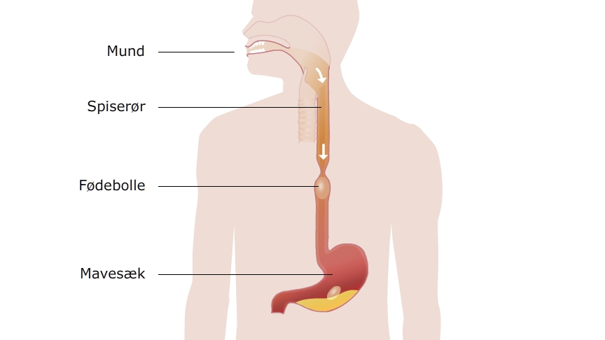

For at tænderne kan tygge maden i stykker, er der nødt til at blive tilført noget vand. Dette vand kalder vi spyt og udover vand er der også nogle kemiske forbindelser der kemisk begynder at nedbryde maden (enzymer). Når maden er tygget grundigt igennem og er blevet blandet med vand og enzymer, synker vi maden - se billedet nedenfor
